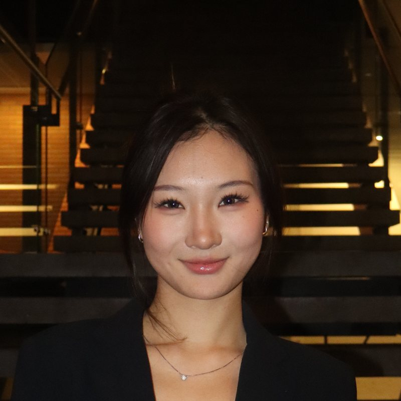

Research-led design, informed by data.
I’m Bella, a second-year Informatics student at the University of Washington, minoring in Applied Math. I study how people actually use things, and I use data to make design decisions better.
ScrollAbout

I start with people, not screens. Think-aloud interviews, affinity maps and quick prototypes show me where things break. Data tells me how often. I grew up in Toronto, study in Seattle, and switch between English, Mandarin and French.
- Studying
- B.S. Informatics, Data Science
- Minor
- Applied Mathematics
- Graduating
- June 2028
- Languages
- English, Mandarin, French
Projects
Three independent projects from 2024: an app, a physical product with a companion app, and packaging tested in a grocery store.
-
 01 / 2024
01 / 2024
Studdy Buddy
A study-matching app that pairs students by when they want to study. Think-aloud interviews, a Rose, Bud, Thorn session, and Figma prototypes tested with students.
-
 02 / 2024
02 / 2024
Lullaboo
An Arduino teddy bear sleep companion. Touch gestures start sleep timers and dream recording, and a companion app keeps a dream diary.
-
 03 / 2024
03 / 2024
PackiPals
Origami-fold takeout packaging that keeps food warm, prototyped on paper and tested with real customers in a grocery store.
Made by hand
Before UX, I made things physically: a fashion collection at RISD Pre-College and mixed-media art that was published in 2024.


Experience
-
UX Designer & Researcher
Independent projects
- Interviewed students and a school nurse with think-aloud protocols, then used affinity mapping to find the key pain points.
- Built Figma prototypes, tested them with students, and simplified sign-up after seeing people quit partway through.
- Mapped an 8-step user journey for Lullaboo and tested PackiPals with real customers in a grocery store.
-
Leader, Co.Wishes
Toronto · Hybrid
- Led recruiting and training volunteers and set direction across several ongoing projects.
- Helped design and build the website for our donation card program, across content and layout.
- Built partnerships with local organizations and ran outreach to grow community involvement.
-
Lead, Art City Community Partnership
Toronto · On-site
- Ran arts enrichment programs with local schools for kids aged 9 to 12, adapting the curriculum to each group.
- Coordinated with school administrators and other leads to keep sessions aligned with each school’s goals.
-
University of Washington
B.S. Informatics, Data Science · Minor in Applied Math
Coursework in data programming (Python), technical foundations of informatics (R), and databases and data modeling (SQL).
Sep 2025 – Jun 2028
Toolkit
Research & design
- UX research
- Think-aloud testing
- Affinity mapping
- User journeys
- Wireframing
- Prototyping
Data & code
- Python
- R
- SQL
- Java
- HTML
- Arduino
- Jupyter
Tools
- Figma
- Miro
- Procreate
- Photoshop
- IntelliJ IDEA
-
UX/UI & Prototyping Certification
The Career Accelerator
Credential ID 191905824
Aug 2026 -
AI Professional Skills Certification
The Career Accelerator
Credential ID 193901376
Sep 2026 -
Data Visualization Certification
The Career Accelerator
-
Summer 2023
RISD Pre-College Program
Fashion design, certificate of completion
Recognition
-
Journal of Student Research
Published paper
“The Feasibility of Full Sustainability in the Fashion Industry”, Vol. 13, No. 2.
2024 -
Young Voices Magazine
Published artwork
“My Head,” mixed media.
2024 -
Project Prologue Summer Arts and Writing Challenge
Award
“We Are Receipts,” fashion design.
2023